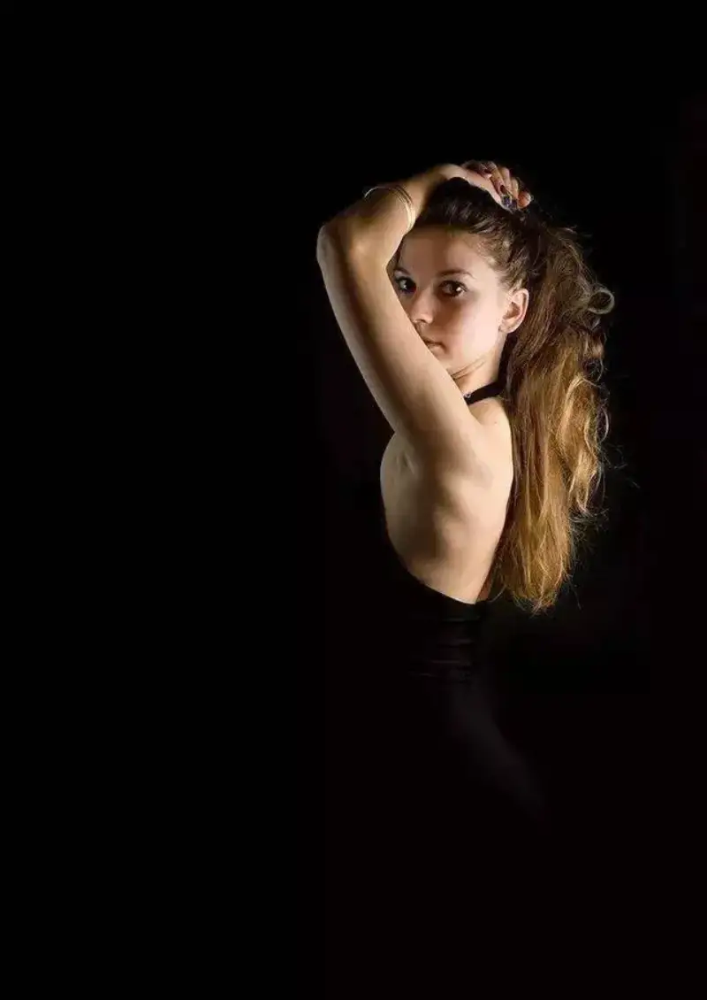
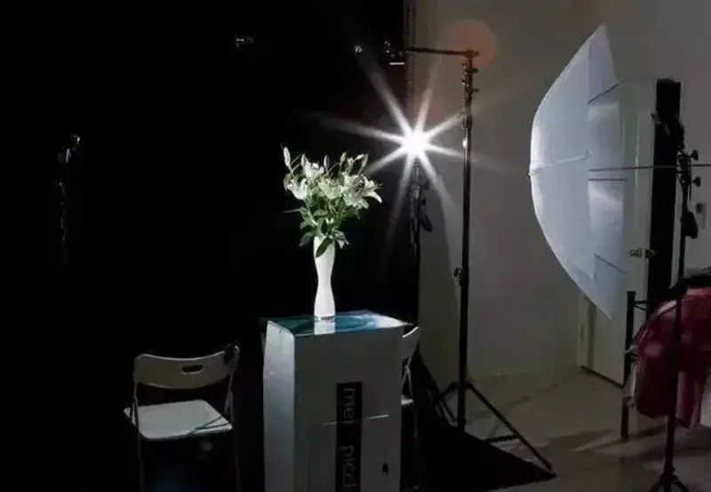

Published: 2022-10-08
Source link: https://www.cnphotos.net/academy/show-99.html
To shoot a dark background with a bright subject, there are two main techniques:
1. Use a black background in the studio;
2. Use flash outdoors to overpower the ambient light.
Use a black or dark background board or cloth. To make the background darker, turn off or dim the room lights. Put the background as far from the subject as possible, so the flash does not light it. Flash power and aperture change the subject brightness. Adjust them to taste.In a dark space, the aperture and flash control the subject brightness, and the shutter controls the background brightness.


1. Basic principle
What is light overpowering? It is just adding light with a flash. Flash has a limited reach. When the background sits beyond the flash reach,
the image shot with flash looks as if the ambient background light has been pushed down by the flash. That is why people call it light overpowering.
2. Basic setup
When you overpower light, front fill light lights the model but flattens the image and loses depth. It looks stiff, as if shot against a background cloth. Instead, light from more to the side, so the light has more layers.
Direct flash light is harsh and does not match the background. Add a softbox to give the image more texture.
3. What if the flash power is not enough?
As noted, flash reach is limited, and so is its power. A more expensive flash usually has more power and a wider reach.
What if the flash power is not enough? Move the subject closer to the light.
But the closer the light is to the model, the harsher the light gets. Balance this trade-off yourself.
To shoot a dark background with a bright subject, remember these four points:
(1) Bright subject: Find where the light starts and where it goes. If the subject can move, place it where the light falls. If the subject cannot move, wait for the light to reach it. This makes the subject bright.
(2) Dark background: In a closed room with only this one light, the background is dark. Outdoors, place the subject under a gap of shade, and the background goes dark.
(3) How to shoot: Put the light and the subject on the same plane. Stand the photographer and camera facing that plane. Then you get a dark background with a bright subject.
(4) Or, shoot a bright subject against a naturally dark background.
To shoot a bright background with a dark subject, remember these three points:
(1) Use the sky as the background; it is naturally bright. This is the simplest way.
(2) Or shoot a scene where the subject is naturally dark and the background is bright.
(3) To shoot a silhouette: Shoot at dawn or dusk; dusk is preferred. Set the camera to spot metering. If you cannot separate focus and metering, focus away from the shadow. You will get a silhouette. Bright background, dark subject, done.